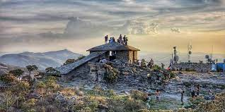

O bom de viajar é colecionar histórias, sorrisos e carimbos! Viajar é colocar a nossa vida em uma constante aventura. A verdadeira viagem de descobrimento não consiste em procurar novas paisagens, e sim em ter novos olhos. Viajar é levar sonhos pelo mundo e trazer de volta as recordações.
Nunca poderemos nos perder verdadeiramente pelo mundo, se não largarmos as âncoras que nos prendem no mesmo lugar. Contudo, viajar é libertador.
Fonte: https://www.pensador.com/frases_sobre_viajar/
São Tomé das Letras é uma cidade encantadora em Minas Gerais, Brasil. Com uma localização privilegiada a 1400 metros de altitude, a cidade oferece vistas panorâmicas deslumbrantes do vale circundante. Rodeada por montanhas cobertas de vegetação exuberante, São Tomé das Letras é um verdadeiro paraíso natural.
Além de sua beleza cênica, a cidade também é famosa por sua mística e energia única. Com lendas antigas e histórias transmitidas de geração em geração, há um ar de mistério e encanto que envolve o lugar. Os moradores locais são acolhedores e orgulhosos de compartilhar suas tradições culturais com os visitantes.
São Tomé das Letras é um destino perfeito para os amantes da natureza e aventureiros. Com uma abundância de cachoeiras deslumbrantes escondidas entre as montanhas, é possível desfrutar de mergulhos refrescantes em águas cristalinas. Trilhas bem preservadas permitem explorar a mata e descobrir segredos naturais ao longo do caminho.
